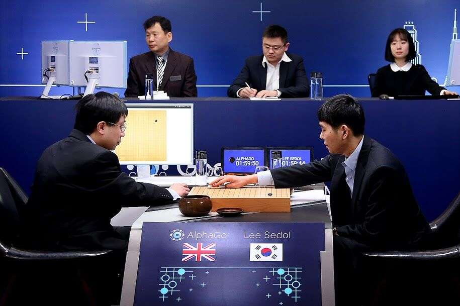
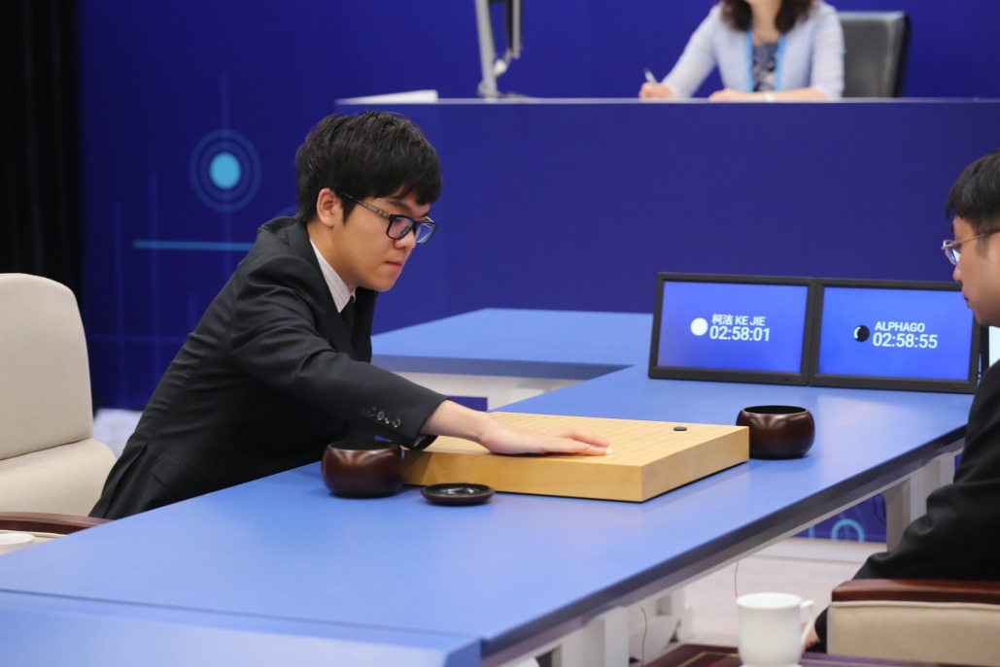
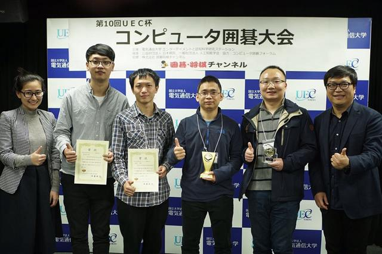

围棋与人工智能
目前最为著名的围棋人工智能:AlphaGo
背景
围棋被认为是目前世界上最复杂的棋盘游戏之一。
与其它棋类游戏相比，电脑模拟的围棋人工智能棋力进展相对缓慢。在1997年，就有电脑可以击败世界囯际象棋棋王卡斯帕洛夫，但围棋软件直到2016年才有办法击败顶尖围棋棋手。这是由于国际象棋目标明确，只要杀死国王即可（系出同源的象棋、将棋状况也差不多），因此算法较为简单；但围棋目标不一定需要围杀对方棋子，每一步有数百种以上的走法，黄山谷有诗：“心似蛛丝游碧落，身如蜩甲化枯枝。”，因此算法的困难度明显要高得多。
在宋代的《梦溪笔谈》中探讨了围棋的局数变化数目，作者沈括称“大约连书万字四十三个，即是局之大数”，意思是说要写43个万字（一个万即104，共43个104，即为10172）。实际数字约为319×19=3361≈1.74×10172。根据围棋规则，没有气的子不能存活，扣除这些状态后的合法状态（占1.196%）约有2.08×10170种。Robertson与Munro在1978年证得围棋是一种PSPACE-hard的问题，其必胜法之记忆计算量在10600以上，这远远超过可观测宇宙的原子总数1075
AlphaGo的突破
 2016年1月27日，《自然》的封面论文报道了Google DeepMind开发的新围棋软件AlphaGo，文中写明，AlphaGo在没有任何让子的情况下以5:0完胜曾获欧洲冠军的职业围棋二段樊麾。这是有史以来围棋软件第一次在公平比赛中战胜职业棋手，被视为人工智能的里程碑。AlphaGo的核心是两种深度神经网络——策略网络和价值网络。2016年3月，AlphaGo挑战韩国职业九段李世石，以4：1击败了对手。2016年12月29日至2017年1月4日间，AlphaGo以“Master”为账号在围棋对弈网站上，以快棋（20秒～30秒）击败了中国和韩国排名第一的柯洁、朴廷桓，以及其他多名顶尖的棋手，创造了60连胜的记录。2017年5月，AlphaGo 在中国乌镇围棋峰会的三局比赛中击败当时世界排名第一的中国棋手柯洁。
原理
AlphaGo使用蒙特卡洛树搜索（Monte Carlo tree search），借助估值网络（value network）与走棋网络（policy network）这两种深度神经网络，通过估值网络来评估大量选点，并通过走棋网络选择落点。AlphaGo最初通过模仿人类玩家，尝试匹配职业棋手的过往棋局，其数据库中约含3000万步棋着。一旦它达到了一定的熟练程度，它开始和自己对弈大量棋局，使用强化学习进一步改善它。围棋无法仅通过寻找最佳棋步来解决；游戏一盘平均约有150步，每一步平均约有200种可选的下法，这意味着有太多需要解决的可能性。
其他围棋人工智能
AlphaGo之后，中国的绝艺和日本的DeepZenGo也达到甚至超过了人类顶尖职业高手的水平。
绝艺（英文名Fine Art）是中国腾讯公司的AI Lab（腾讯人工智能实验室）开发的围棋人工智能。在2017年3月18-19日的第10届UEC杯世界电脑围棋大会上夺得冠军，并在2017年3月26日的第5届电圣战上分先战胜了日本的一力辽七段。目前在腾讯野狐围棋网络对弈平台上公测。
DeepZenGo是日本程序员尾岛阳儿、加藤英树等开发的围棋程序，是在旧版本的Zen围棋软件基础上加入了深度学习技术后开发的新版本，由日本DWANGO公司、东京大学、日本棋院提供支持，其基本原理和AlphaGo类似。在第二届围棋电王战中分先以1:2不敌赵治勋九段。在2017年3月18-19日在日本举办的第10届UEC杯世界电脑围棋大会上获得亚军。在2017年3月21-23日的世界最强棋手决定战上以一胜二负的成绩名列第三名。在2017年3月26日的第5届电圣战上分先战胜了日本的一力辽七段。目前在KGS、弈城、腾讯野狐等网络围棋对弈平台上公测。